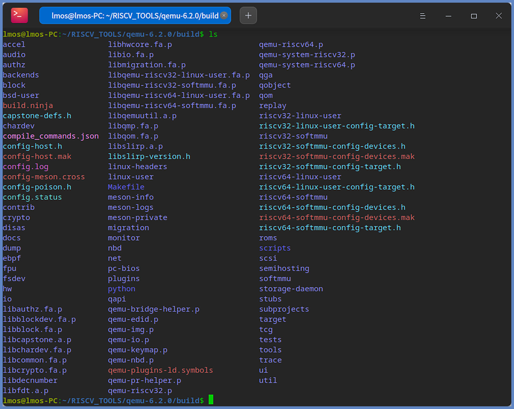
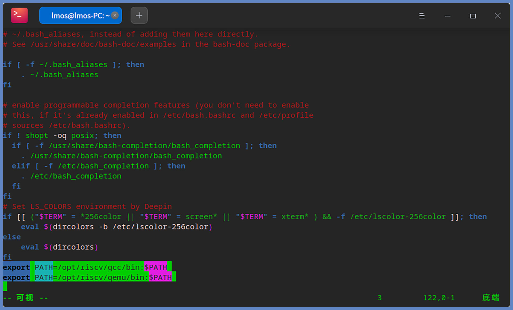
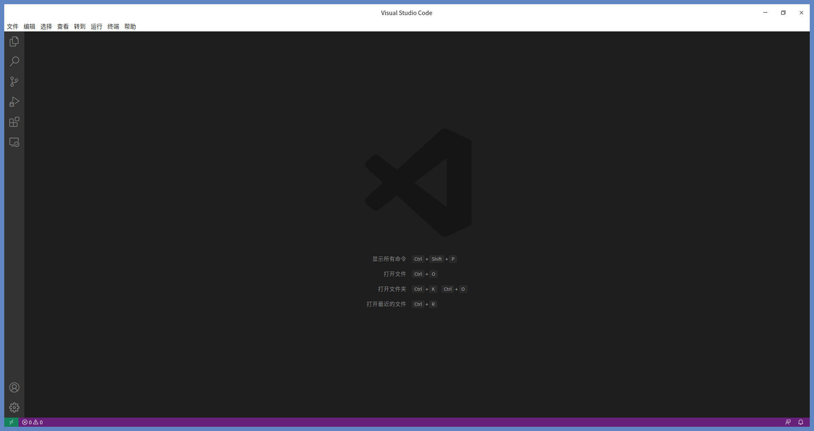
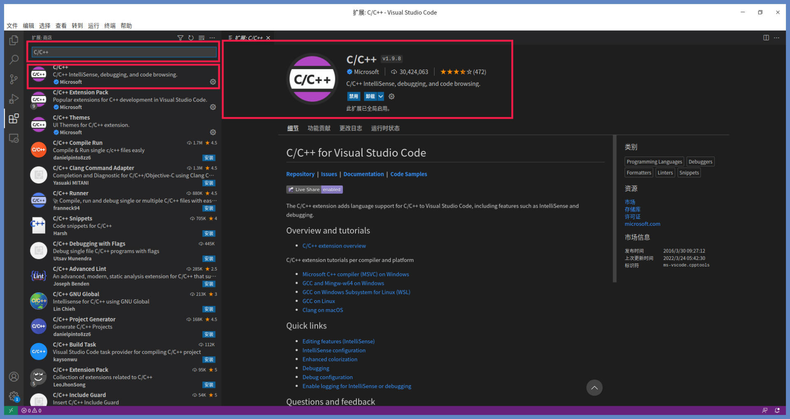
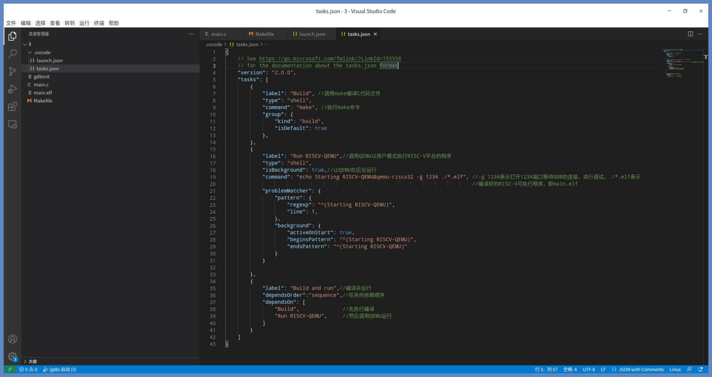
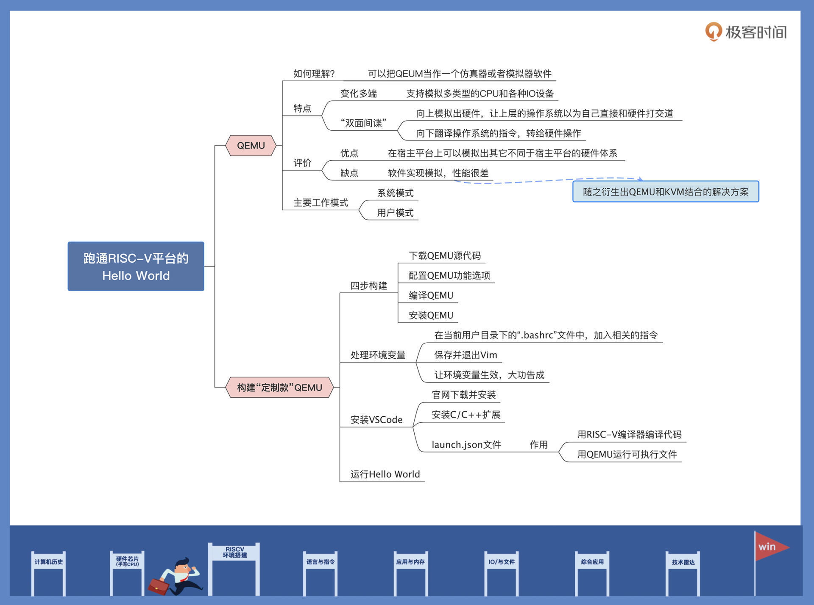

- 00 开篇词 练好基本功，优秀工程师成长第一步.md
- 01 CISC & RISC：从何而来，何至于此.md
- 02 RISC特性与发展：RISC-V凭什么成为“半导体行业的Linux”？.md
- 03 硬件语言筑基（一）：从硬件语言开启手写CPU之旅.md
- 04 硬件语言筑基（二）_ 代码是怎么生成具体电路的？.md
- 05 指令架构：RISC-V在CPU设计上到底有哪些优势？.md
- 06 手写CPU（一）：迷你CPU架构设计与取指令实现.md
- 07 手写CPU（二）：如何实现指令译码模块？.md
- 08 手写CPU（三）：如何实现指令执行模块？.md
- 09 手写CPU（四）：如何实现CPU流水线的访存阶段？.md
- 10 手写CPU（五）：CPU流水线的写回模块如何实现？.md
- 11 手写CPU（六）：如何让我们的CPU跑起来？.md
- 12 QEMU：支持RISC-V的QEMU如何构建？.md
- 13 小试牛刀：跑通RISC-V平台的Hello World程序.md
- 14 走进C语言：高级语言怎样抽象执行逻辑？.md
- 15 C与汇编：揭秘C语言编译器的“搬砖”日常.md
- 16 RISC-V指令精讲（一）：算术指令实现与调试.md
- 17 RISC-V指令精讲（二）：算术指令实现与调试.md
- 18 RISC-V指令精讲（三）：跳转指令实现与调试.md
- 19 RISC-V指令精讲（四）：跳转指令实现与调试.md
- 20 RISC-V指令精讲（五）：原子指令实现与调试.md
- 21 RISC-V指令精讲（六）：加载指令实现与调试.md
- 22 RISC-V指令精讲（七）：访存指令实现与调试.md
- 23 内存地址空间：程序中地址的三种产生方式.md
- 24 虚实结合：虚拟内存和物理内存.md
- 25 堆&栈：堆与栈的区别和应用.md
- 26 延迟分配：提高内存利用率的三种机制.md
- 27 应用内存管理：Linux的应用与内存管理.md
- 28 进程调度：应用为什么能并行执行？.md
- 29 应用间通信（一）：详解Linux进程IPC.md
- 30 应用间通信（二）：详解Linux进程IPC.md
- 31 外设通信：IO Cache与IO调度.md
- 32 IO管理：Linux如何管理多个外设？.md
- 33 lotop与lostat命令：聊聊命令背后的故事与工作原理.md
- 34 文件仓库：初识文件与文件系统.md
- 35 Linux文件系统（一）：Linux如何存放文件？.md
- 36 Linux文件系统（二）：Linux如何存放文件？.md
- 37 浏览器原理（一）：浏览器为什么要用多进程模型？.md
- 38 浏览器原理（二）：浏览器进程通信与网络渲染详解.md
- 39 源码解读：V8 执行 JS 代码的全过程.md
- 40 内功心法（一）：内核和后端通用的设计思想有哪些？.md
- 41 内功心法（二）：内核和后端通用的设计思想有哪些？.md
- 42 性能调优：性能调优工具eBPF和调优方法.md
- 先睹为快：迷你CPU项目效果演示.md
- 加餐01 云计算基础：自己动手搭建一款IAAS虚拟化平台.md
- 加餐02 学习攻略（一）：大数据&云计算，究竟怎么学？.md
- 加餐03 学习攻略（二）：大数据&云计算，究竟怎么学？.md
- 加餐04 谈谈容器云与和CaaS平台.md
- 加餐05 分布式微服务与智能SaaS.md
- 国庆策划01 知识挑战赛：检验一下学习成果吧！.md
- 国庆策划02 来自课代表的学习锦囊.md
- 国庆策划03 揭秘代码优化操作和栈保护机制.md
- 温故知新 思考题参考答案（一）.md
- 用户故事 我是怎样学习Verilog的？.md
- 结束语 心若有所向往，何惧道阻且长.md
13 小试牛刀：跑通RISC-V平台的Hello World程序
你好，我是LMOS。
在上一课中，我们一起约定了主环境，安装了编译工具和依赖库，构建了交叉编译RISC-V工具链。
今天我们继续构建RISC-V版的模拟器QEMU（代码你可以从这里下载），让它成为“定制款”，更匹配我们的学习需要。为此，我们需要设置好主环境的环境变量，安装好VSCode及其插件，这样才能实现编辑、编译、运行、调试RISC-V程序的一体化、自动化。
话不多说，我们开始吧。
RISC-V运行平台
有了上节课成功构建好的交叉编译器，有很多同学可能按捺不住，急着想写一个简单的Hello World程序，来测试一下刚刚构建的交叉编译器。
恕我直言，这时你写出来的Hello World程序，虽然会无警告、无错误的编译成功，但是只要你一运行，铁定会出错。
这是为什么呢？因为你忘记了交叉编译器，生成的是RISC-V平台的可执行程序，这样的程序自然无法在你的宿主机x86平台上运行，它只能在RISC-V平台上运行。
摸着自己的荷包，你可能陷入了沉思：难道我还要买一台RISC-V平台的计算机？这样成本可太高了，不划算。
贫穷让人学会变通，为了节约成本，我们希望能用软件模拟RISC-V平台。嘿！这当然可以，而且前辈们，早已给我们写好了这样的软件，它就是QEMU。
揭秘QEMU
什么是QEMU？QEMU是一个仿真器或者说是模拟器软件，与市面上BOCHS类似，由软件来实现模拟。
QEMU就像计算机界的“孙悟空”，变化多端，能模拟出多种类型的CPU，比如IA32、AMD64、ARM、MIPS、PPC、SPARC、RISC-V等。QUEM通过动态二进制转换来模拟CPU。除了CPU，它还支持模拟各种IO设备，并提供一系列的硬件模型。这使得QEMU能模拟出完整的硬件平台，使得QEMU能运行各种操作系统，如Windows和Linux。
你可以把QEMU当做一个“双面间谍”，因为在它上面运行的操作系统，也许还认为自己在和硬件直接打交道，其实是同QEMU模拟出来的硬件打交道，QEMU再将这些指令翻译给真正硬件进行操作。通过这种模式，QEMU运行的操作系统就能和宿主机上的硬盘、网卡、CPU、CD-ROM、音频设备、USB设备等进行交互了。
由于QEMU的以上这些特点，导致QEMU在宿主平台上可以模拟出其它不同于宿主平台的硬件体系，这是QEMU的优点。
不过，由于是用了软件来实现的模拟，所以性能很差，这也是QEMU的缺点。正因为这个缺点，后来就出现了 QEMU和KVM结合使用的解决方案。
KVM基于硬件辅助的虚拟化技术，主要负责比较繁琐的CPU和内存虚拟化，而QEMU则负责 I/O设备的模拟，两者合作各自发挥自身的优势，成就了强强联合的典范。
回归主题，关于QEMU，现阶段你最需要记住的就是，它有两种主要工作模式：系统模式和用户模式。
在系统工作模式下，QEMU能模拟整个计算机系统，包括CPU及其他IO设备。它能运行和调试不同平台开发的操作系统，也能在宿主机上虚拟不同数量、不同平台的虚拟电脑。而在用户工作模式，QEMU能建立一个普通进程，运行那些由不同体系处理器编译的应用程序，比如后面我们要动手编写的RISC-V版的Hello World程序。
构建我们的“定制款”QEMU
说了这么多，其实是想让你更加了解QEMU。
下面我们来办正事儿——构建适合我们的QEMU，如果我们不是有特殊要求——模拟RISC-V平台且带调试功能的QEMU，用不着亲自动手去构建，只需要一条安装指令就完事了。
构建QEMU用四步就能搞定：首先下载QEMU源代码，接着配置QEMU功能选项，然后编译QEMU，最后安装QEMU。
我们需要从QEMU官网上下载稳定版本的QEMU源代码。如果你和我一样，觉得在浏览器上点来点去非常麻烦，也可以在切换到RISCV_TOOLS目录的终端下，输入如下指令：
wget https://download.qemu.org/qemu-6.2.0.tar.xz #下载源码包
tar xvJf qemu-6.2.0.tar.xz #解压源码包
这里跑完第一条指令以后，下载下来的是压缩的QEMU源码包。所以，在下载完成后，你要用第二条指令来解压。
由于[上节课]我们构建RISC-V工具链时，已经统一安装了构建QEMU所需要的相关依赖库，所以这里就不用安装相关依赖库了。
解压成功后，我们就要开始配置QEMU的功能了。同样，为了不污染源代码目录，我们可以先在qemu-6.2.0目录下，建立一个build目录，然后切换到build目录下进行配置，输入如下指令：
mkdir build #建立build目录
cd build #切换到build目录下
../configure --prefix=/opt/riscv/qemu --enable-sdl --enable-tools --enable-debug --target-list=riscv32-softmmu,riscv64-softmmu,riscv32-linux-user,riscv64-linux-user #配置QEMU
上述配置选项中，–prefix表示QEMU的安装目录，我们一起约定为“/opt/riscv/qemu”目录，–enable-sdl表示QEMU使用sdl图形库， --enable-tools表示生成QEMU工具集，–enable-debug表示打开QEMU调试功能。
最重要的是 --target-list 这个选项，它表示生成QEMU支持的模拟目标机器。不同选项所支持的平台不同，我们的选择如下表所示：

如果你什么都不选的话，它会默认生成QEMU支持的所有平台。按前面我们讲的操作配置，配置成功后，build目录下会生成后面截图里展示的文件和目录。

配置好功能选项之后，下一步就是编译QEMU了。只要配置成功了，编译这事儿就非常简单了，我们只要输入如下指令，然后交给计算机编译就好了。别忘了等待期间泡杯茶，不知道你会不会像我一样哼起那首歌：“世上有没有人，安静的等待你，一直不愿回神……”
sudo make -j8
最后就是安装QEMU，经过漫长等待以后，我们终于迎来编译的成功。这时，你还需要输入如下指令进行安装。
sudo make install
这里说明一下，QEMU不像RISC-V工具链那样，会在编译结束后自动安装，它需要手动安装。
我们在终端中切换到“/opt/riscv/qemu/bin”目录下，执行如下指令：
qemu-riscv32 -version && qemu-riscv64 -version && qemu-system-riscv32 -version && qemu-system-riscv64 -version
上述指令会输出qemu-riscv32、qemu-riscv64、qemu-system-riscv32、qemu-system-riscv64的版本信息，以证明能运行RISC-V平台可执行程序的QEMU构建成功。你可以对照一下后面的截图。

到这里，RISC-V平台的编译环境和执行环境已经构建完成，并且能生成和执行32位或者64位的RISC-V平台的可执行程序，无论是RISC-V平台的应用程序，还是RISC-V平台的操作系统。
处理环境变量
不知道你发现了没有？我们运行QEMU和RISC-V工具链相关的程序，都要切换到/opt/riscv/xxxx/bin目录中才可以运行，而不是像Linux中的其它程序，可以直接在终端中直接运行。
革命还未成功，我们还得努力。这是因为我们没有将QEMU和RISC-V工具链的安装目录，加入到Linux的环境变量中。
接下来我们就开始处理环境变量，修改环境的方法有好几种。这里我为你演示比较常用的一种，那就是在当前用户目录下的“.bashrc”文件中，加入相关的指令。
这里说的“当前用户的目录”就是在终端中执行"cd ~" 指令。怎么操作呢？我们切换到当前用户目录下，来执行这个指令。然后，在文件尾部加上两行信息就行了。具体指令如下所示：
cd ~ #切换到当前用户目录下
vim ./.bashrc #打开.bashrc文件进行编辑
#在.bashrc文件末尾加入如下信息
export PATH=/opt/riscv/gcc/bin:$PATH
export PATH=/opt/riscv/qemu/bin:$PATH
上述操作完成以后，你会看到下图所示的结果：- 
随后，我们按下键盘上ESC键，接着输入":wq"以便保存并退出Vim。这样操作后，你会发现环境变量并没有生效。
这里还差最后一步，我们在终端中输入如下指令，让环境变量生效：
source ./.bashrc
现在，你在任何目录之下输入QEMU和RISC-V工具链相关的程序命令，它们就都可以正常运行了。
安装VSCode
有了QEMU和RISC-V工具链相关的程序命令，我们虽然可以编译调试和执行RISC-V平台的程序了，但是必须在终端中输入多条指令，才能完成相关的工作。
这对于很多同学来说，肯定觉得很陌生，特别是在图形化盛行的今天，我们更期待能有个轻量级的IDE。
这里我们约定使用VSCode，它安装起来也很简单。在 VSCode官网上下载deb包，下载后双击deb安装，或者切换到刚才下载VSCode目录的终端中，输入如下指令就行了。
sudo apt-get install -f *.deb
安装好后，在你的桌面会出现VSCode图标，双击打开后的页面如下所示：

不过，有了VSCode我们目前只能写代码，还不能编译和调试代码，所以需要给VSCode安装C/C++扩展。我们只需打开VSCode，按下ctrl+shift+x，就能打开VSCode的扩展页面，在搜索框中输入C/C++就可以安装了，如下所示：

至此，我们的VSCode及其需要的扩展组件就安装完成了。
下一步，我们还需要在你的代码目录下建立一个.vscode文件夹，并在文件里写上两个配置文件。这两个配置文件我已经帮你写好了，如下所示。

在.vscode文件夹中有个tasks.json文件，它主要负责完成用RISC-V编译器编译代码的功能，还有用QEMU运行可执行文件的功能。
我们先说说这里的编译工作是怎么完成的。具体就是通过调用make，读取代码目录中的Makefile脚本，在这个脚本中会调用riscv64-unknown-elf-gcc完成编译。等编译成功后，才会调用QEMU来接手，由它运行编译好的可执行程序。代码注释已经写得很清楚了，你可以停下来仔细看看。
不过，tasks.json文件虽然解决了编译与运行的问题，但是它也是被其它文件调用的。被谁调用呢？那就是我们的调试配置文件launch.json文件，它用于启动调试器GDB，只不过这里启动的不是宿主平台上的GDB，而RISC-V工具链中的GDB。其内容如下所示：

当我们写好代码后，按下F5键后，VSCode就会执行launch.json文件的调试操作了。这里调试器和要调试的可执行程序已经制定好了。不过由于preLaunchTask的指定，开始执行调试命令之前，VSCode会首先执行tasks.json文件中的操作，即编译和运行。
运行Hello World
下面我们一起来写下那个著名的程序——Hello World！写好后，在main函数所在的行前打上一个断点，按下F5键，就会看到如下界面。

如果不出意外，哈哈，放心，按我提供给你的步骤，也出不了意外，你一定会看到以上界面。
我们重点来观察红色方框中的信息，可以查看代码变量值、CPU的寄存器值、函数的调用栈、断点信息、源代码以及程序执行后在VSCode内嵌终端中输出的信息。有了这些信息，我们就能清楚地看到一个程序运行过程的状态和结果。
走到这里，我们的定制款QEMU以及VSCode就搭好了，可以去图形化编辑、编译、运行和调试RISC-V平台的可执行程序了。
重点回顾
好了，我们的RISC-V平台的Hello World，也是我们在宿主机上开发的第一个非宿主机的程序，现在已经成功运行，这说明我们之前的工作完成得很完美，今天的课程不知不觉也接近了尾声。
下面来回顾一下，这节课我们都做了些什么。
首先，我们构建了能运行RISC-V可执行程序的QEMU模拟器，这使得我们不必购买RISC-V平台的机器，就能在宿主机上运行RISC-V可执行程序。这不但大大方便了我们的开发工作，而且节约了成本。
然后，我们处理了环境变量，方便我们在任何目录下，都可以随意使用RISC-V工具链中的命令和QEMU相关的命令。
最后，我们安装了VSCode，还在其中安装C/C++扩展并对其进行了相应的配置。以后我们在VSCode图形环境下编写代码、编译代码和调试代码，就能一气呵成了。
这节课的要点我整理了导图，供你参考。

恭喜你坚持到这里，通过两节课的内容，我们拿下了开发环境这一关，这对我们后续课程中的实验相当重要。下一模块讲解和调试RISC-V汇编指令的时候，你会进一步体会到环境搭建好的便利，先好好休息一下，咱们下节课见。
思考题
处理环境变量后为什么要执行source ./.bashrc，才会生效？
欢迎你在留言区提问或者晒晒你的实验记录。如果觉得有收获，也推荐你把这节课分享给你的朋友。
© 2019 - 2023 Liangliang Lee. Powered by Vert.x and hexo-theme-book.